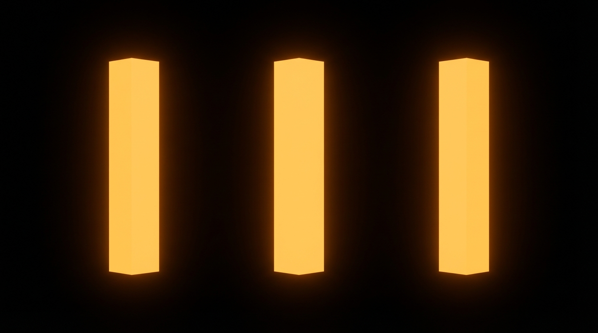

<!DOCTYPE html>
<html lang="en">
<head>
  <meta charset="UTF-8">
  <meta name="viewport" content="width=device-width, initial-scale=1.0">
  <title>The Three Canons of Craft</title>
  <script src="https://cdn.tailwindcss.com"></script>
  <script src="https://unpkg.com/react@18/umd/react.production.min.js"></script>
  <script src="https://unpkg.com/react-dom@18/umd/react-dom.production.min.js"></script>
  <script src="https://unpkg.com/@babel/standalone/babel.min.js"></script>
  <script src="https://unpkg.com/framer-motion@10.16.4/dist/framer-motion.js"></script>
  <link href="https://fonts.googleapis.com/css2?family=Inter:wght@400;500;600;700;800&display=swap" rel="stylesheet">
  <script>
    tailwind.config = {
      theme: {
        extend: {
          colors: {
            accent: '#f59e0b',
            dark: '#0a0a0a',
          }
        }
      }
    }
  </script>
  <style>
    * { font-family: 'Inter', -apple-system, BlinkMacSystemFont, sans-serif; }
    body { background: #FFFFFF; color: #1a1a1a; }
    .lesson-container { max-width: 720px; margin: 0 auto; }
    .glow-accent { box-shadow: 0 0 60px rgba(245, 158, 11, 0.3); }
  </style>
</head>
<body>
  <div id="root"></div>

  <script type="text/babel">
    const { motion, useInView, AnimatePresence } = window.Motion;
    const { useState, useRef, useEffect } = React;

    const smoothEase = [0.25, 0.1, 0.25, 1];

    // SVG Icons
    const Icons = {
      eye: (
        <svg className="w-6 h-6" fill="none" stroke="currentColor" viewBox="0 0 24 24" strokeWidth="1.5">
          <path strokeLinecap="round" strokeLinejoin="round" d="M2.036 12.322a1.012 1.012 0 010-.639C3.423 7.51 7.36 4.5 12 4.5c4.638 0 8.573 3.007 9.963 7.178.07.207.07.431 0 .639C20.577 16.49 16.64 19.5 12 19.5c-4.638 0-8.573-3.007-9.963-7.178z"/>
          <path strokeLinecap="round" strokeLinejoin="round" d="M15 12a3 3 0 11-6 0 3 3 0 016 0z"/>
        </svg>
      ),
      checkCircle: (
        <svg className="w-6 h-6" fill="none" stroke="currentColor" viewBox="0 0 24 24" strokeWidth="1.5">
          <path strokeLinecap="round" strokeLinejoin="round" d="M9 12.75L11.25 15 15 9.75M21 12a9 9 0 11-18 0 9 9 0 0118 0z"/>
        </svg>
      ),
      fingerprint: (
        <svg className="w-6 h-6" fill="none" stroke="currentColor" viewBox="0 0 24 24" strokeWidth="1.5">
          <path strokeLinecap="round" strokeLinejoin="round" d="M7.864 4.243A7.5 7.5 0 0119.5 10.5c0 2.92-.556 5.709-1.568 8.268M5.742 6.364A7.465 7.465 0 004.5 10.5a7.464 7.464 0 01-1.15 3.993m1.989 3.559A11.209 11.209 0 008.25 10.5a3.75 3.75 0 117.5 0c0 .527-.021 1.049-.064 1.565M12 10.5a14.94 14.94 0 01-3.6 9.75m6.633-4.596a18.666 18.666 0 01-2.485 5.33"/>
        </svg>
      ),
      check: (
        <svg className="w-5 h-5" fill="none" stroke="currentColor" viewBox="0 0 24 24" strokeWidth="2">
          <path strokeLinecap="round" strokeLinejoin="round" d="M4.5 12.75l6 6 9-13.5"/>
        </svg>
      ),
      x: (
        <svg className="w-5 h-5" fill="none" stroke="currentColor" viewBox="0 0 24 24" strokeWidth="2">
          <path strokeLinecap="round" strokeLinejoin="round" d="M6 18L18 6M6 6l12 12"/>
        </svg>
      ),
      spark: (
        <svg className="w-6 h-6" fill="none" stroke="currentColor" viewBox="0 0 24 24" strokeWidth="1.5">
          <path strokeLinecap="round" strokeLinejoin="round" d="M9.813 15.904L9 18.75l-.813-2.846a4.5 4.5 0 00-3.09-3.09L2.25 12l2.846-.813a4.5 4.5 0 003.09-3.09L9 5.25l.813 2.846a4.5 4.5 0 003.09 3.09L15.75 12l-2.846.813a4.5 4.5 0 00-3.09 3.09zM18.259 8.715L18 9.75l-.259-1.035a3.375 3.375 0 00-2.455-2.456L14.25 6l1.036-.259a3.375 3.375 0 002.455-2.456L18 2.25l.259 1.035a3.375 3.375 0 002.456 2.456L21.75 6l-1.035.259a3.375 3.375 0 00-2.456 2.456zM16.894 20.567L16.5 21.75l-.394-1.183a2.25 2.25 0 00-1.423-1.423L13.5 18.75l1.183-.394a2.25 2.25 0 001.423-1.423l.394-1.183.394 1.183a2.25 2.25 0 001.423 1.423l1.183.394-1.183.394a2.25 2.25 0 00-1.423 1.423z"/>
        </svg>
      ),
      document: (
        <svg className="w-6 h-6" fill="none" stroke="currentColor" viewBox="0 0 24 24" strokeWidth="1.5">
          <path strokeLinecap="round" strokeLinejoin="round" d="M19.5 14.25v-2.625a3.375 3.375 0 00-3.375-3.375h-1.5A1.125 1.125 0 0113.5 7.125v-1.5a3.375 3.375 0 00-3.375-3.375H8.25m0 12.75h7.5m-7.5 3H12M10.5 2.25H5.625c-.621 0-1.125.504-1.125 1.125v17.25c0 .621.504 1.125 1.125 1.125h12.75c.621 0 1.125-.504 1.125-1.125V11.25a9 9 0 00-9-9z"/>
        </svg>
      )
    };

    // Animation Components
    function FadeUp({ children, delay = 0, className = "" }) {
      const ref = useRef(null);
      const isInView = useInView(ref, { once: true, margin: "-50px" });
      return (
        <motion.div ref={ref} className={className}
          initial={{ opacity: 0, y: 30 }}
          animate={isInView ? { opacity: 1, y: 0 } : {}}
          transition={{ duration: 0.6, delay, ease: smoothEase }}>
          {children}
        </motion.div>
      );
    }

    function ScaleIn({ children, delay = 0, className = "" }) {
      const ref = useRef(null);
      const isInView = useInView(ref, { once: true, margin: "-50px" });
      return (
        <motion.div ref={ref} className={className}
          initial={{ opacity: 0, scale: 0.9 }}
          animate={isInView ? { opacity: 1, scale: 1 } : {}}
          transition={{ duration: 0.5, delay, ease: smoothEase }}>
          {children}
        </motion.div>
      );
    }

    // Canon Tester Interactive Component
    function CanonTester() {
      const [currentExample, setCurrentExample] = useState(0);
      const [showResults, setShowResults] = useState(false);

      const examples = [
        {
          copy: "We provide innovative solutions for modern businesses.",
          visualize: { pass: false, note: "'Solutions' is invisible. Can't picture it. What does it look like?" },
          falsify: { pass: false, note: "'Innovative' is pure opinion. Says who? Prove it." },
          unique: { pass: false, note: "Any competitor on earth could say this exact line." },
          verdict: "FAILS all three. Corporate nothing-speak that says nothing."
        },
        {
          copy: "Worn by supermodels in London and dads in Ohio.",
          visualize: { pass: true, note: "You instantly see both scenes - runway and suburban lawn." },
          falsify: { pass: true, note: "Supermodels wore them. Dads wear them. Both verifiable facts." },
          unique: { pass: true, note: "Only New Balance can claim this specific dual appeal." },
          verdict: "PASSES all three. Memorable, believable, and ownable."
        },
        {
          copy: "Go from couch to 5K in 8 weeks, even if you haven't run since high school gym class.",
          visualize: { pass: true, note: "Couch. 5K finish line. Gym class. All vivid pictures." },
          falsify: { pass: true, note: "8 weeks is measurable. 5K is specific. Time-bound promise." },
          unique: { pass: true, note: "'High school gym class' is ownable, relatable detail." },
          verdict: "PASSES all three. Concrete, believable, and emotionally resonant."
        },
      ];

      const handleNext = () => {
        setShowResults(false);
        setCurrentExample((prev) => (prev + 1) % examples.length);
      };

      const ex = examples[currentExample];

      return (
        <div className="bg-neutral-900 rounded-2xl p-8 text-white">
          <div className="text-center mb-6">
            <p className="text-neutral-400 text-xs uppercase tracking-widest mb-2">Canon Tester</p>
            <p className="text-lg">Example {currentExample + 1} of {examples.length}</p>
          </div>

          <div className="p-6 bg-neutral-800 rounded-xl mb-6">
            <p className="text-xl text-center italic">"{ex.copy}"</p>
          </div>

          {!showResults ? (
            <motion.button
              onClick={() => setShowResults(true)}
              className="w-full py-3 bg-accent text-white rounded-xl font-medium hover:bg-amber-600 transition-colors"
              whileHover={{ scale: 1.02 }}
              whileTap={{ scale: 0.98 }}
            >
              Test Against The Three Canons
            </motion.button>
          ) : (
            <motion.div initial={{ opacity: 0 }} animate={{ opacity: 1 }}>
              <div className="space-y-4 mb-6">
                {[
                  { name: 'Can I visualize it?', result: ex.visualize, icon: Icons.eye },
                  { name: 'Can I falsify it?', result: ex.falsify, icon: Icons.checkCircle },
                  { name: 'Can nobody else say it?', result: ex.unique, icon: Icons.fingerprint }
                ].map((canon, i) => (
                  <div key={i} className="flex items-start gap-3 p-4 bg-neutral-800 rounded-xl">
                    <div className={canon.result.pass ? 'text-emerald-400' : 'text-red-400'}>
                      {canon.result.pass ? Icons.check : Icons.x}
                    </div>
                    <div className="flex-1">
                      <p className={`font-medium ${canon.result.pass ? 'text-emerald-400' : 'text-red-400'}`}>
                        {canon.name}
                      </p>
                      <p className="text-sm text-neutral-400">{canon.result.note}</p>
                    </div>
                  </div>
                ))}
              </div>

              <div className={`p-4 rounded-xl mb-4 ${ex.verdict.includes('PASSES') ? 'bg-emerald-900/30 border border-emerald-700/50' : 'bg-red-900/30 border border-red-700/50'}`}>
                <p className={ex.verdict.includes('PASSES') ? 'text-emerald-200' : 'text-red-200'}>
                  <strong>Verdict:</strong> {ex.verdict}
                </p>
              </div>

              <button
                onClick={handleNext}
                className="w-full py-3 bg-neutral-700 text-white rounded-xl font-medium hover:bg-neutral-600 transition-colors"
              >
                Try Another Example
              </button>
            </motion.div>
          )}
        </div>
      );
    }

    // Canon Cards
    function CanonCards() {
      const canons = [
        {
          num: 1,
          question: "Can I visualize it?",
          icon: Icons.eye,
          description: "Abstract words are invisible to the brain. You can't picture 'solutions' or 'synergy.' But you can picture 'a red Ferrari' or 'a stack of hundred dollar bills.' The brain processes concrete images 60,000 times faster than abstract concepts. If you can't draw it, rewrite it.",
          bad: "We offer seamless integration.",
          good: "Connect your apps in 3 clicks."
        },
        {
          num: 2,
          question: "Can I falsify it?",
          icon: Icons.checkCircle,
          description: "'We're the best' is just your opinion. So is 'industry-leading' and 'world-class.' These are claims that can never be proven or disproven - which makes them worthless. '10,000 customers in 6 months' can be verified. Specific, provable claims build trust. You can't talk. You can only point.",
          bad: "Gold is a great investment.",
          good: "Gold outperformed the S&P 500 for 20 consecutive years."
        },
        {
          num: 3,
          question: "Can nobody else say it?",
          icon: Icons.fingerprint,
          description: "Here's the ultimate test: if competitors could swap their name into your copy and it would still make sense, you've failed. Great copy is so specific to YOUR story, YOUR results, YOUR unique position that nobody else can steal it. Mine your own experiences for details nobody else has.",
          bad: "Quality service at competitive prices.",
          good: "The only CRM built by salespeople who closed $47M ourselves."
        }
      ];

      return (
        <div className="space-y-6">
          {canons.map((canon, i) => (
            <FadeUp key={i} delay={i * 0.1}>
              <div className="bg-white rounded-2xl p-6 border border-neutral-200 shadow-sm">
                <div className="flex items-center gap-4 mb-4">
                  <div className="w-12 h-12 rounded-xl bg-gradient-to-br from-accent to-amber-600 text-white flex items-center justify-center font-bold text-xl">
                    {canon.num}
                  </div>
                  <div className="flex items-center gap-2">
                    <div className="text-accent">{canon.icon}</div>
                    <h3 className="text-xl font-bold text-neutral-900">{canon.question}</h3>
                  </div>
                </div>

                <p className="text-neutral-600 mb-6 leading-relaxed">{canon.description}</p>

                <div className="grid md:grid-cols-2 gap-4">
                  <div className="p-4 bg-neutral-100 rounded-xl border border-neutral-200">
                    <div className="flex items-center gap-2 mb-2">
                      <div className="text-neutral-500">{Icons.x}</div>
                      <p className="text-xs text-neutral-500 font-semibold uppercase tracking-wider">Fails</p>
                    </div>
                    <p className="text-neutral-700 text-sm italic">"{canon.bad}"</p>
                  </div>
                  <div className="p-4 bg-neutral-950 rounded-xl">
                    <div className="flex items-center gap-2 mb-2">
                      <div className="text-white">{Icons.check}</div>
                      <p className="text-xs text-neutral-400 font-semibold uppercase tracking-wider">Passes</p>
                    </div>
                    <p className="text-neutral-300 text-sm italic">"{canon.good}"</p>
                  </div>
                </div>
              </div>
            </FadeUp>

              {/* Lesson Illustration */}
              <FadeUp>
                <div className="my-8">
                  
                </div>
              </FadeUp>
          ))}
        </div>
      );
    }

    function Lesson() {
      return (
        <div className="min-h-screen bg-white">
          {/* Hero - Dark */}
          <header className="bg-dark text-white px-6 py-16 relative overflow-hidden">
            <div className="absolute inset-0 bg-gradient-to-br from-accent/20 via-transparent to-transparent" />
            <div className="lesson-container relative">
              <FadeUp>
                <span className="inline-flex items-center gap-2 px-4 py-2 bg-white/10 backdrop-blur-sm text-white/90 text-xs font-semibold rounded-full mb-6 border border-white/10">
                  {Icons.document}
                  SENTENCE CRAFT
                </span>
                <h1 className="text-4xl md:text-5xl font-extrabold mb-4 leading-tight">
                  The Three Canons of Craft
                </h1>
                <p className="text-xl text-neutral-400 max-w-lg">
                  Every sentence must pass three tests. Three yeses = strong copy. Three nos = rubbish.
                </p>
              </FadeUp>
            </div>
          </header>

          {/* Section 1 - White: Introduction */}
          <section className="px-6 py-16 bg-white">
            <div className="lesson-container space-y-8">
              <FadeUp>
                <p className="text-lg text-neutral-700 leading-relaxed">
                  Most corporate copy fails a simple test. It's abstract ("innovative solutions"), unprovable ("industry-leading"), and generic ("trusted by businesses worldwide"). It sounds professional. It says absolutely nothing.
                </p>
                <p className="text-lg text-neutral-700 leading-relaxed mt-4">
                  Marketing genius Harry Dry developed three questions that separate forgettable fluff from copy that converts. Before you publish ANY sentence, it must pass all three. No exceptions. No excuses. This is the filter that separates professionals from amateurs.
                </p>
                <p className="text-lg text-neutral-600 leading-relaxed mt-4">
                  Apply these three tests ruthlessly to every line you write, and watch your conversion rates transform. Skip them, and watch your words disappear into the void of corporate noise.
                </p>
              </FadeUp>
            </div>
          </section>

          {/* Section 2 - Dark: The Three Canons */}
          <section className="px-6 py-16 bg-dark text-white">
            <div className="lesson-container space-y-8">
              <FadeUp>
                <h2 className="text-3xl font-bold mb-2">The Three Questions</h2>
                <p className="text-neutral-400 max-w-2xl">
                  Every sentence you write should answer "yes" to all three. If it doesn't, that sentence needs to die and be reborn with specificity.
                </p>
              </FadeUp>
            </div>
          </section>

          {/* Section 3 - White: Canon Cards */}
          <section className="px-6 py-16 bg-white">
            <div className="lesson-container">
              <CanonCards />
            </div>
          </section>

          {/* Section 4 - Dark: Interactive Tester */}
          <section className="px-6 py-16 bg-dark text-white">
            <div className="lesson-container space-y-8">
              <FadeUp>
                <h2 className="text-3xl font-bold mb-2">Test Your Judgment</h2>
                <p className="text-neutral-400">
                  Can you spot copy that passes versus copy that fails? Test your newfound knowledge.
                </p>
              </FadeUp>

              <FadeUp delay={0.1}>
                <CanonTester />
              </FadeUp>
            </div>
          </section>

          {/* Section 5 - White: Holy Shit Moment */}
          <section className="px-6 py-16 bg-white">
            <div className="lesson-container">
              <FadeUp>
                <div className="bg-gradient-to-br from-accent to-amber-600 rounded-3xl p-8 md:p-12 text-white glow-accent">
                  <div className="flex items-center gap-3 mb-6">
                    <div className="w-12 h-12 bg-white/20 rounded-xl flex items-center justify-center">
                      {Icons.spark}
                    </div>
                    <span className="text-sm font-semibold uppercase tracking-wider text-white/80">The Holy Shit Moment</span>
                  </div>
                  <p className="text-2xl md:text-3xl font-bold leading-tight mb-6">
                    If a competitor could swap their name into your copy, start over.
                  </p>
                  <p className="text-white/80 text-lg leading-relaxed">
                    Generic copy isn't safe. It's invisible. Nobody remembers it. Nobody acts on it. Nobody shares it. Specificity is the price of attention - and the only currency that buys trust.
                  </p>
                </div>
              </FadeUp>
            </div>
          </section>

          {/* Section 6 - Dark: Key Takeaways */}
          <section className="px-6 py-16 bg-dark text-white">
            <div className="lesson-container">
              <FadeUp>
                <h2 className="text-sm uppercase tracking-widest text-neutral-500 mb-8">Key Takeaways</h2>
                <div className="space-y-3">
                  {[
                    "Can I visualize it? Concrete beats abstract. If you can't draw it, rewrite it.",
                    "Can I falsify it? Back every claim with evidence. You can't talk, only point.",
                    "Can nobody else say it? Own your message. Mine your unique story for details.",
                    "Three yeses = strong copy. Three nos = rewrite until you pass all three.",
                    "Generic copy is invisible. Specificity is the price of attention.",
                    "Test every sentence ruthlessly before you publish anything."
                  ].map((takeaway, i) => (
                    <motion.div
                      key={i}
                      initial={{ opacity: 0, x: -20 }}
                      whileInView={{ opacity: 1, x: 0 }}
                      viewport={{ once: true }}
                      transition={{ delay: i * 0.05 }}
                      className="flex items-start gap-3 p-4 bg-neutral-900 rounded-xl border border-neutral-800"
                    >
                      <div className="text-accent mt-0.5">{Icons.check}</div>
                      <span className="text-neutral-200">{takeaway}</span>
                    </motion.div>
                  ))}
                </div>
              </FadeUp>
            </div>
          </section>

          {/* Footer */}
          <footer className="px-6 py-8 border-t border-neutral-100 bg-white">
            <div className="lesson-container flex justify-between items-center text-sm text-neutral-400">
              <span>Quantum Scale</span>
              <span>Sentence Craft</span>
            </div>
          </footer>
        </div>
      );
    }

    ReactDOM.render(<Lesson />, document.getElementById('root'));
  </script>
</body>
</html>
